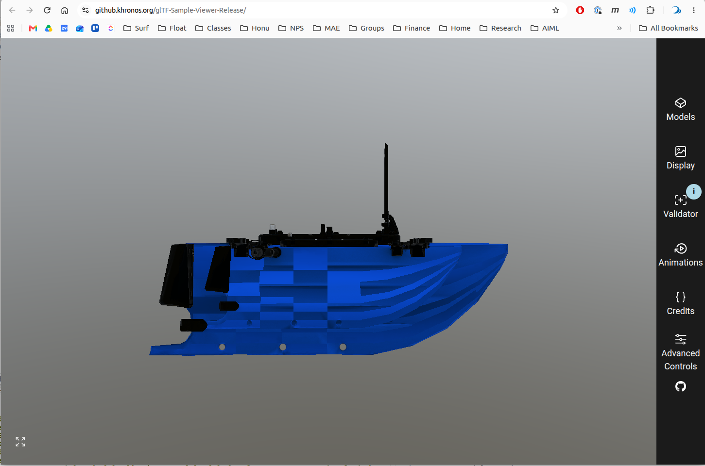
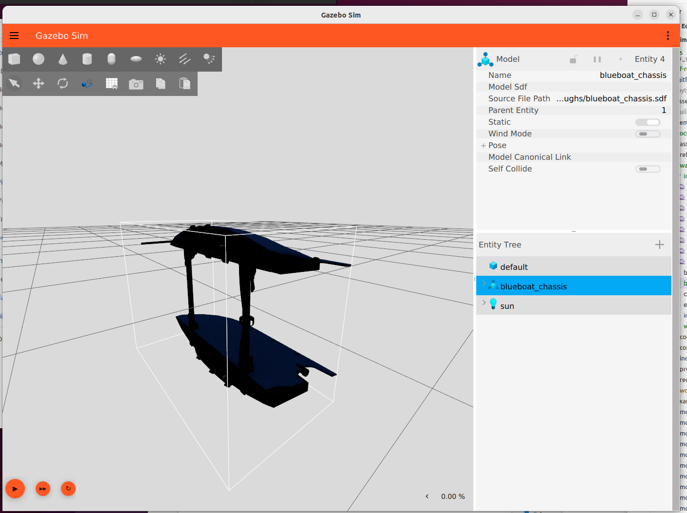
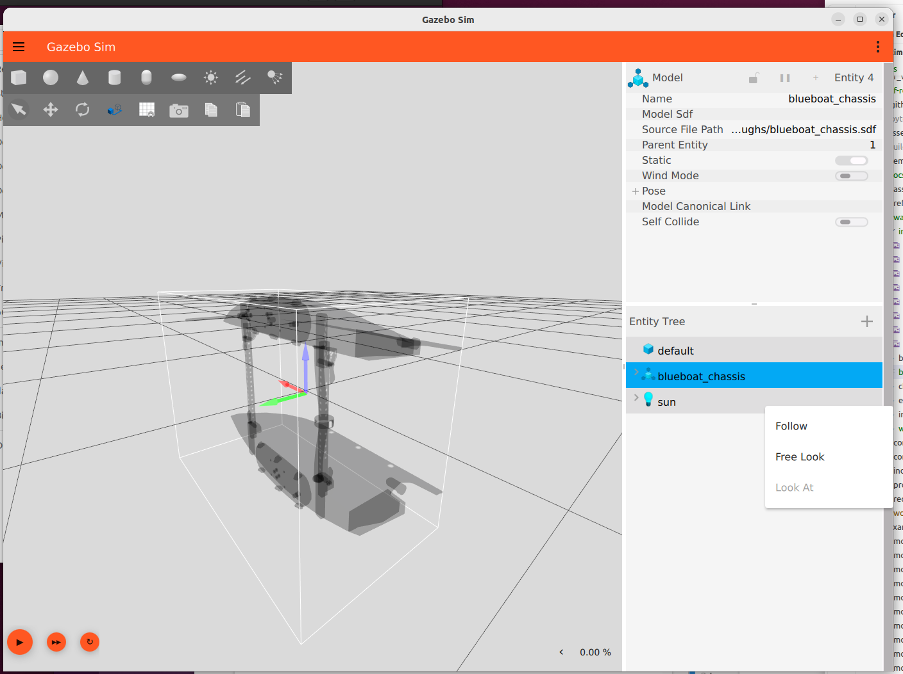
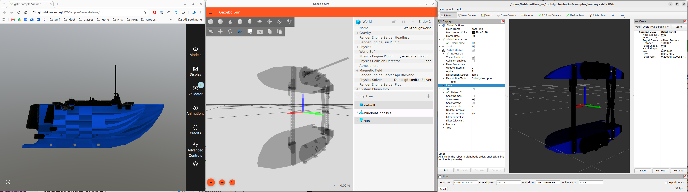

BlueBoat Walkthrough
Following the new workflow
Commission
YAML file: /home/bsb/maritime_ws/src/bluerobotics_models/bluerobotics_parts/commissions/commission-blueboat_chassis.yaml
Document with text and photos, linked to YAML: /home/bsb/maritime_ws/src/bluerobotics_models/docs/vehicles/blueboat/visual_asset_commission.md
Fill manifest
Example, without installing the python executable
export GLB=~/maritime_ws/src/bluerobotics_models/bluerobotics_parts/models/blueboat_chassis/blueboat_chassis.visual.glb
PYTHONPATH=src python3 -m gltf_robotics.manifest ~/maritime_ws/src/bluerobotics_models/bluerobotics_parts/commissions/commission-blueboat_chassis.yaml $GLB
Verify
Valid?
./gltf_validator -a -o $GLB
/home/bsb/maritime_ws/src/bluerobotics_models/bluerobotics_parts/models/blueboat_chassis/blueboat_chassis.visual.glb
Errors: 0, Warnings: 1, Infos: 1, Hints: 0
Time: 10ms
Warnings:
/meshes/0/primitives/0/material: Material requires a tangent space but the mesh primitive does not provide it. Runtime-generated tangent space may be non-portable across implementations.
Infos:
/extensionsUsed/0: Cannot validate an extension as it is not supported by the validator: 'KHR_xmp_json_ld'.
{
"uri": "../../src/bluerobotics_models/bluerobotics_parts/models/blueboat_chassis/blueboat_chassis.visual.glb",
"mimeType": "model/gltf-binary",
"validatorVersion": "2.0.0-dev.3.10",
"issues": {
"numErrors": 0,
"numWarnings": 1,
"numInfos": 1,
"numHints": 0,
"messages": [
{
"code": "UNSUPPORTED_EXTENSION",
"message": "Cannot validate an extension as it is not supported by the validator: 'KHR_xmp_json_ld'.",
"severity": 2,
"pointer": "/extensionsUsed/0"
},
{
"code": "MESH_PRIMITIVE_GENERATED_TANGENT_SPACE",
"message": "Material requires a tangent space but the mesh primitive does not provide it. Runtime-generated tangent space may be non-portable across implementations.",
"severity": 1,
"pointer": "/meshes/0/primitives/0/material"
}
],
"truncated": false
},
"info": {
"version": "2.0",
"generator": "Khronos glTF Blender I/O v5.1.20",
"extensionsUsed": [
"KHR_xmp_json_ld"
],
"resources": [
{
"pointer": "/buffers/0",
"mimeType": "application/gltf-buffer",
"storage": "glb",
"byteLength": 2985696
},
{
"pointer": "/images/0",
"mimeType": "image/jpeg",
"storage": "buffer-view",
"image": {
"width": 2048,
"height": 2048,
"format": "rgb",
"bits": 8
}
},
{
"pointer": "/images/1",
"mimeType": "image/png",
"storage": "buffer-view",
"image": {
"width": 2048,
"height": 2048,
"format": "rgba",
"primaries": "srgb",
"transfer": "srgb",
"bits": 8
}
},
{
"pointer": "/images/2",
"mimeType": "image/jpeg",
"storage": "buffer-view",
"image": {
"width": 2048,
"height": 2048,
"format": "rgb",
"bits": 8
}
}
],
"animationCount": 0,
"materialCount": 1,
"hasMorphTargets": false,
"hasSkins": false,
"hasTextures": true,
"hasDefaultScene": true,
"drawCallCount": 1,
"totalVertexCount": 10455,
"totalTriangleCount": 10668,
"maxUVs": 1,
"maxInfluences": 0,
"maxAttributes": 3
}
}
Intended
Drag and drop into https://github.khronos.org/glTF-Sample-Viewer-Release/

Shows we have Y-up, which is not as “intended”
Compliant - gltf-check
bsb@hulihuli:~/maritime_ws/tools/gltf-robotics$ cd ~/maritime_ws/tools/gltf-robotics
bsb@hulihuli:~/maritime_ws/tools/gltf-robotics$ PYTHONPATH=src python3 -m gltf_robotics.check.cli $GLB
marks:
PASS the rule is satisfied
FAIL a MUST in the profile is violated; the delivery is not compliant
WARN a SHOULD is violated, or a MUST the file alone cannot settle; review before delivering
OPEN the profile has not settled this point (the profile's Open issues section); nothing to fix, something to discuss
SKIP nothing in the file for the rule to examine
This answers only the 'compliant' question of the profile's Conformance testing section:
does the file satisfy the rules that can be decided by reading it. Valid (Khronos
validator), intended (reference viewer) and usable (glb_probe, Gazebo, RViz) are
separate checks.
/home/bsb/maritime_ws/src/bluerobotics_models/bluerobotics_parts/models/blueboat_chassis/blueboat_chassis.visual.glb
File naming: named <part>.visual.glb, with <part> in lowercase snake_case
PASS named blueboat_chassis.visual.glb
File format: delivered as binary .glb rather than .gltf
PASS binary .glb container
The manifest: carries a KHR_xmp_json_ld manifest, and its contents agree with the file
PASS manifest present, role base
Asset header: asset header declares glTF 2.0 and no minVersion
PASS asset header is 2.0 with no minVersion
Units: in meters at real-world scale, checked against the cited dimension
PASS length overall 1.2 m matches the X extent 1.192 m
Axes: declares +X forward and +Z up, per ISO 9787 and REP 103
PASS declared +X forward, +Z up
Scenes and nodes: exactly one scene and one named node, with no children and no transform
FAIL the root node has a Blender numeric suffix
'blueboat_chassis.visual.001'
Datum specification: names the datum point its origin is referenced to
PASS datum point: Intersection of three planes on the geometry mid-point as explained and illustrated in docs/vehicles/blueboat/configuration.md
Geometry: every primitive is triangles carrying POSITION, NORMAL and TEXCOORD_0
PASS every primitive is triangles with POSITION, NORMAL, TEXCOORD_0
UV sets: UV coordinates present, and inside the range 0 to 1
PASS 1 UV set, inside [0, 1]
Primitives: a primitive exists only to carry a material distinct from its siblings
PASS 1 primitive, each carrying a distinct material
Materials: every primitive has a material, with metalness stated rather than defaulted
WARN 1 material leaves metallicFactor unset but carry an ORM map
USV Mat (metallicFactor unset, so 1.0, metallicRoughness texture present).
The texture's blue channel multiplies against the factor, so a black
metallic channel would still yield a non-metal. Settling it needs the
decoded texel values, which this tool does not read. Do not assume it is
fine: a solid white metallic channel is the usual export, and every map
measured in this project's own library had B = 255, which makes the part
fully metal. State the factor explicitly if the part is not metal.
Textures: textures are PNG in the linear slots and at most 2048 px on a side
FAIL 2 linear maps are JPEG
Normal-USV: JPEG in normal; Metallic-USV.png-Roughness-Blue-USV: JPEG in
metallicRoughness. Chroma subsampling blends channels that are unrelated in
a normal or ORM map. The remedy is a re-export from the source texture --
converting a JPEG to PNG preserves the damage.
Transparency: transparency declared per material: MASK for cutouts, never BLEND on an opaque part
FAIL USV Mat uses alphaMode BLEND
Gazebo ignores BLEND and renders the material opaque; a cutout belongs in
MASK with binary alpha
Prohibited content: no prohibited extension, animation, skin, camera or light
PASS no prohibited extensions or content
Authoring toolchain: records the exporter that produced it
PASS generator: Khronos glTF Blender I/O v5.1.20
16 checks: 3 FAIL, 1 WARN, 12 PASS
-> not compliant: 3 MUSTs are violated in Scenes and nodes, Textures, Transparency
gltf probe
In container
cd ~/maritime_ws/tools/gltf-robotics/probe/glb_probe
cmake -S . -B build
make --build build
export GLB=~/maritime_ws/src/bluerobotics_models/bluerobotics_parts/models/blueboat_chassis/blueboat_chassis.visual.glb
./build/glb_probe $GLB
===== /home/bsb/maritime_ws/src/bluerobotics_models/bluerobotics_parts/models/blueboat_chassis/blueboat_chassis.visual.glb
(2026-09-30 03:09:30.809) [debug] [AssimpLoader.cc:651] Loading embedded texture [/home/bsb/maritime_ws/src/bluerobotics_models/bluerobotics_parts/models/blueboat_chassis/blueboat_chassis.visual.glb#*0] as [/home/bsb/maritime_ws/src/bluerobotics_models/bluerobotics_parts/models/blueboat_chassis/blueboat_chassis.visual.glb#*0_Diffuse]
(2026-09-30 03:09:30.862) [debug] [AssimpLoader.cc:651] Loading embedded texture [/home/bsb/maritime_ws/src/bluerobotics_models/bluerobotics_parts/models/blueboat_chassis/blueboat_chassis.visual.glb#*1] as [/home/bsb/maritime_ws/src/bluerobotics_models/bluerobotics_parts/models/blueboat_chassis/blueboat_chassis.visual.glb#*1_MetallicRoughness]
(2026-09-30 03:09:30.887) [debug] [AssimpLoader.cc:494] Splitting MetallicRoughness map for [/home/bsb/maritime_ws/src/bluerobotics_models/bluerobotics_parts/models/blueboat_chassis/blueboat_chassis.visual.glb#*1]
(2026-09-30 03:09:30.985) [debug] [AssimpLoader.cc:651] Loading embedded texture [/home/bsb/maritime_ws/src/bluerobotics_models/bluerobotics_parts/models/blueboat_chassis/blueboat_chassis.visual.glb#*2] as [/home/bsb/maritime_ws/src/bluerobotics_models/bluerobotics_parts/models/blueboat_chassis/blueboat_chassis.visual.glb#*2_Normal]
bbox min -0.598506 -0.228827 -0.46236 max 0.593174 0.463013 0.46236
submeshes 1 materials 1 skeleton yes
submesh[0] name='blueboat_chassis.visual.001' verts 10455 tris 10668 normals 10455 uvsets 1 material 0
bounds min -0.598506 -0.228827 -0.46236 max 0.593174 0.463013 0.46236
material[0] diffuse 1 1 1 1 transparency 0 alphaFromTexture 0 threshold 0.5 twoSided 0 emissive 0 0 0 1
base color: /home/bsb/maritime_ws/src/bluerobotics_models/bluerobotics_parts/models/blueboat_chassis/blueboat_chassis.visual.glb#*0_Diffuse [2048x2048]
pbr metalness 1 roughness 1
normal: /home/bsb/maritime_ws/src/bluerobotics_models/bluerobotics_parts/models/blueboat_chassis/blueboat_chassis.visual.glb#*2_Normal [2048x2048]
metalness: /home/bsb/maritime_ws/src/bluerobotics_models/bluerobotics_parts/models/blueboat_chassis/blueboat_chassis.visual.glb#*1_Metalness [2048x2048]
roughness: /home/bsb/maritime_ws/src/bluerobotics_models/bluerobotics_parts/models/blueboat_chassis/blueboat_chassis.visual.glb#*1_Roughness [2048x2048]
emissive: -
lightmap: - uvset 0
Gazebo standalone
Manual make SDF - see [./blueboat_chassis.sdf]
in drydock
gz sim -v2 ~/maritime_ws/tools/gltf-robotics/docs/walkthroughs/blueboat_chassis.sdf


RVIZ
Manually create URDF - see [./blueboat_chassis.urdf]. Note that we undo the automatically applied “y-up” coordinate transform by including a rotation in the link
<link name="base_link">
<visual><origin xyz="0 0 0" rpy="-1.5708 0 0"/>
<geometry><mesh filename="file:///home/bsb/maritime_ws/src/bluerobotics_models/bluerobotics_parts/models/blueboat_chassis/blueboat_chassis.visual.glb"/></geometry></visual>
Two shells in drydock
ros2 run robot_state_publisher robot_state_publisher --ros-args \
-p robot_description:="$(cat ~/maritime_ws/tools/gltf-robotics/docs/walkthroughs/blueboat_chassis.urdf)"
rviz2 -d ~/maritime_ws/tools/gltf-robotics/examples/monkey.rviz

From the gltf-robotics repo root, set PYTHONPATH to src and run the module:
cd ~/maritime_ws/tools/gltf-robotics PYTHONPATH=src python3 -m gltf_robotics.check.cli ~/maritime_ws/src/bluerobotics_models/bluerobotics_parts/models/blueboat_chassis/blueboat_chassis.visual.glb The same pattern covers all four tools:
Command Module gltf-check gltf_robotics.check.cli gltf-manifest gltf_robotics.manifest gltf-summary gltf_robotics.summary gltf-assess gltf_robotics.assess.cli Options work the same way, for example -q to show only the sections with something to report, or –json.